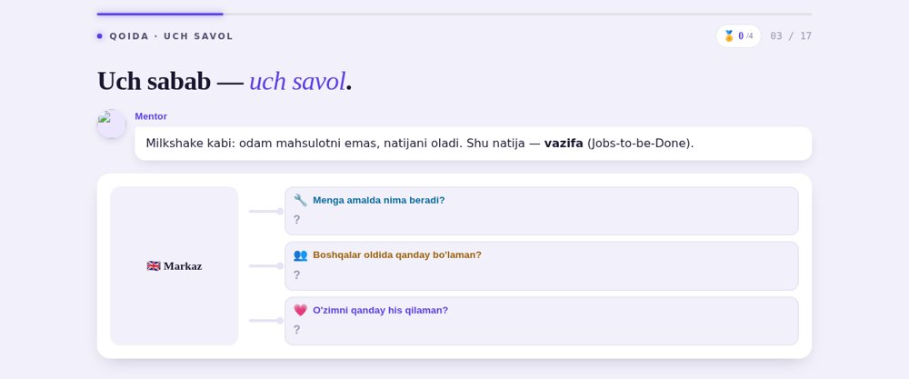
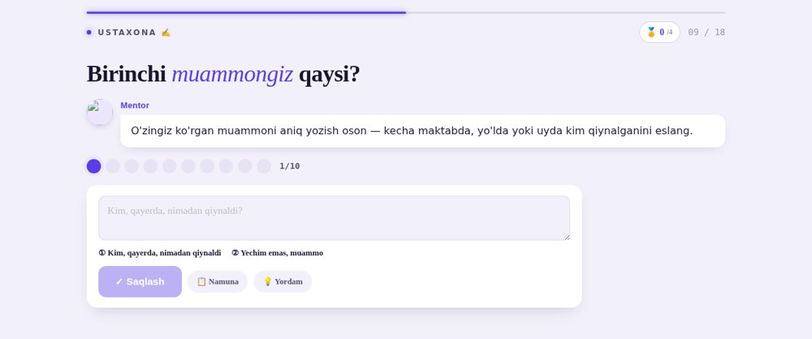
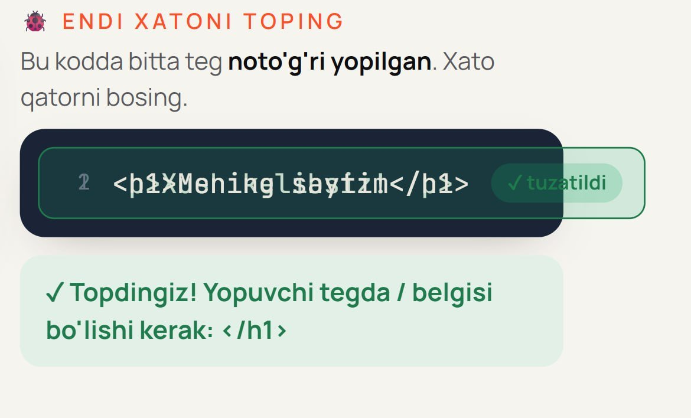
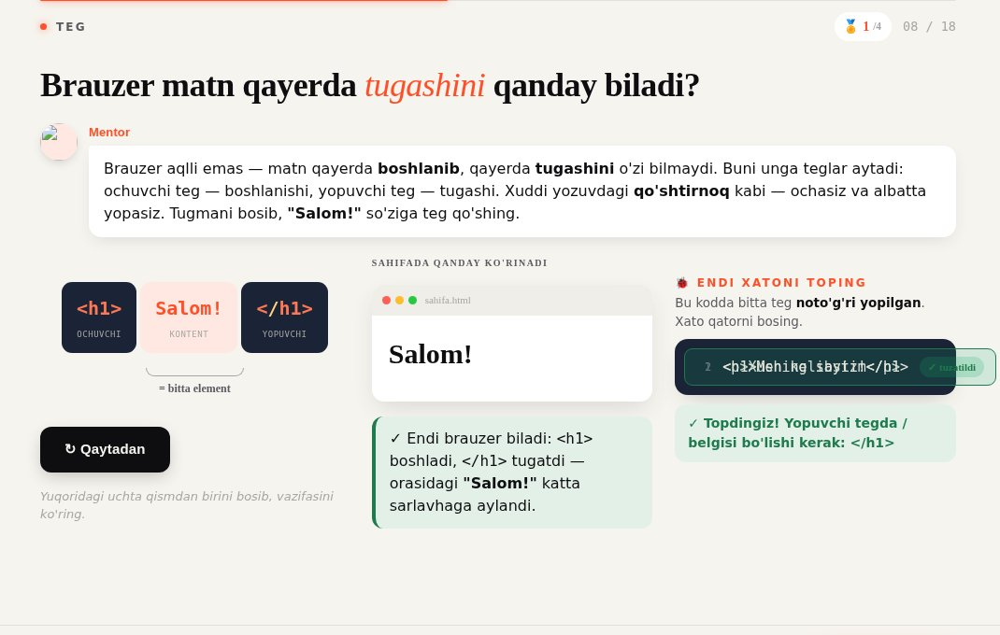
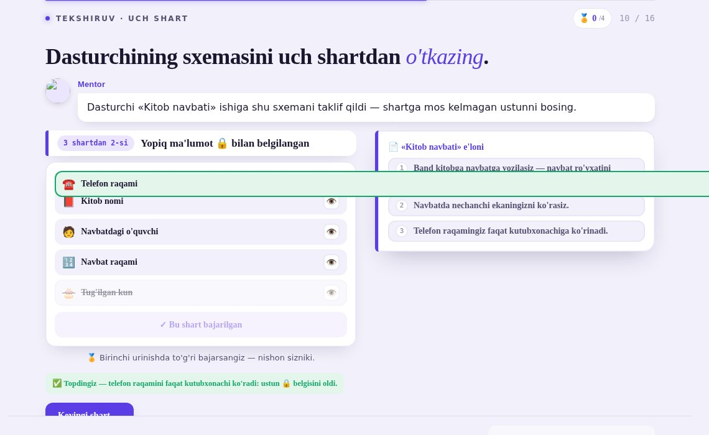

Hammasi LMS'dagi faylning o'zida (25.09 paketi, md5 bilan tekshirilgan) brauzerda qayta chiqarildi. Tuzatish-variantlari vaqtinchalik nusxada suratga olindi.
| Savol | Javob | Holat |
|---|---|---|
| S1 · fixed sinfi | A | bajarildi 15 fayl, 16 className + 21 CSS joy. 16 ta joyning hammasi LMS CSS bilan brauzerda tekshirildi (13 tasi bosib, 3 tasi CSS darajasida): qator joyida, qo'shnisi ustiga tushmaydi |
| S2 · belgi | faqat ✓ | bajarildi 11 fayl: «tuzatildi» so'zi olindi, ✓ qoldi. Bitta istisno: S7 |
| Darvozalar | 7/7 esbuild · undef · jsx · keys · dark · til · prompt. Parallel seans qo'shgan tell/emoji yiqiladi, lekin HEAD bilan aynan bir xil (77/77, 39/39): oldindan bor qarz, bu tahrirdan emas | |
| S3 · paket | A | S6 ni kutyapti yangi darslar kirsa-kirmasa tartib raqamlari o'zgaradi |
| S4 · 2 yangi dars | A | to'xtatildi yangi topilma, pastda S6 |
| S5 · darvozalar | A | paketdan keyin: yangi skriptlar alohida faylda, gates.mjs ga ulash parallel seanslar tugagach |
S4 da «A» ni tanlagan edingiz, lekin sahifada buni aytmagan edim. «Muammoni qanday topamiz» (2-Modul) va «Bitta natija, uch xil sabab» (3-Modul) 28.09 dan beri GATE 2 javobini kutib turibdi, undan keyin RU tarjima va GATE 3 bor. Ikkalasi ham ruscha tayyor emas: RU rejimda brauzerda yurilganda Muammo'da 101, JTBD'da 98 ta o'zbekcha so'z chiqdi (JTBD'da 540 ta matndan 413 tasi ruschasiz). Tayyor ikki tilli dars (PmLesson4) esa toza.


3-Modul «React nima va nima uchun?», 16-ekran. Tuzatilgan qatorning o'zi uzun (<SkinKartasi /> <Savat /> // ikki alohida blok), shuning uchun kod qutisi 472 px, ichidagisi 504 px bo'lib qoladi. Natijada qutida gorizontal aylantirgich chiqadi va ✓ ko'rinmaydi. Bu LMS'dan qat'i nazar shunday. Ruschasi (// два отдельных блока) yana uzunroq.
S1–S5 ga javob berilgan. Pastdagi topilmalar va savollar o'zgarmagan, ma'lumot uchun qoldirildi.
score o'zgaruvchisifixed sinfi LMS'ning Tailwind CSS'i bilan to'qnashadifixed sinfiLMS sahifasi Tailwind CSS ishlatadi, unda .fixed { position: fixed } qoidasi bor. LMS darsni o'z sahifasining ichida chizadi (iframe yo'q), shuning uchun bu qoida darsga ham tegadi. Dars tuzatilgan qatorga aynan fixed degan sinf beradi. Natijada qator joyidan uzilib, brauzer oynasiga yopishib qoladi.



Bizning suratlarda shriftlar tarmoqsiz yuklangani uchun sarlavhalar boshqacha ko'rinadi. Bu farqning bugga aloqasi yo'q.
| Modul | Dars | Ekran | Qator turi | Holat |
|---|---|---|---|---|
| 1-Modul | 03 · HTML asoslari | 8 | debug-qator | isbotlandi |
| 1-Modul | 05 · Takrorlash: HTML ustaxonasi | 7 | debug-qator | LMS'da |
| 1-Modul | 09 · HTML Praktika: Portfolio sayt | 15 | debug-qator | LMS'da |
| 3-Modul | 01 · React nima va nima uchun? | 16 | debug-qator | 22.09 da kelgan |
| 3-Modul | 03 · Birinchi komponent: Vite, JSX, props | 19 | debug-qator | LMS'da |
| 3-Modul | 06 · Props va qayta ishlatish | 17 | debug-qator | LMS'da |
| 3-Modul | 09 · API: POST/PUT/DELETE | 17 | debug-qator | LMS'da |
| 3-Modul | 11 · Praktika: React Router | 17 | debug-qator | LMS'da |
| 3-Modul | yangi · Bitta natija, uch xil sabab (JTBD) | 12 | kod-qator | hali yuklanmagan |
| 4-Modul | 02 · Ilova nimani eslab qolsin? | 10 | jadval-qator | LMS'da |
| 4-Modul | 05 · Routing: server so'rovni qanday topadi | 13 | debug-qator | LMS'da |
| 4-Modul | 06 · PostgreSQL so'rovlar: CRUD + AI | 16 | debug-qator | LMS'da |
| 4-Modul | 12 · Ilova nimani yozib qoladi? | 10 | sxema-qator | isbotlandi |
| 4a-Modul | 04 · Praktika: KitobShop backend | 4, 19 | voqea-qator | LMS'da |
| 4c-Modul | 04 · Loyiha kuni: to'liq lentani qurish | 4 | debug-qator | LMS'da |
2 tasi brauzerda isbotlandi. Qolgan 13 tasida sinf ham, mexanizm ham bir xil. Tuzatishdan keyin har biri brauzerda LMS CSS bilan alohida tekshiriladi. LMS CSS'idagi 401 ta Tailwind sinfining boshqalari bilan to'qnashuv yo'q (.italic ham bor, lekin u darsdagi bilan bir xil ishni qiladi).
15 joy, hammasining ildizi bir xil.
S1 tuzatilgach ko'rinib qoladi. HTML darsida 3 ustun bor, qora quti tor bo'lgani uchun belgi o'ng chetda kesiladi (LMS'siz ham shunday). Hozir u faqat qator «qochib» chiqqani uchun ko'rinardi. Bir xil komponent 8 ta debug-darsda bor.
2-Modul «Muammoni qanday topamiz» (3-o'rin) va 3-Modul «Bitta natija, uch xil sabab» (3-o'rin). Ikkalasining lesson_id si (pm-m2d3-v1, pm-m3d3-v1) server katalogida yo'q, katalog 20.09 dan beri yangilanmagan. Katalogsiz bu darslarning natijasi CRM'ga yozilmaydi.
Bu jarayon o'zgarishi. gates.mjs umumiy fayl, shuning uchun parallel seanslar tugagach qo'shiladi.
Hali tanlanmadi.